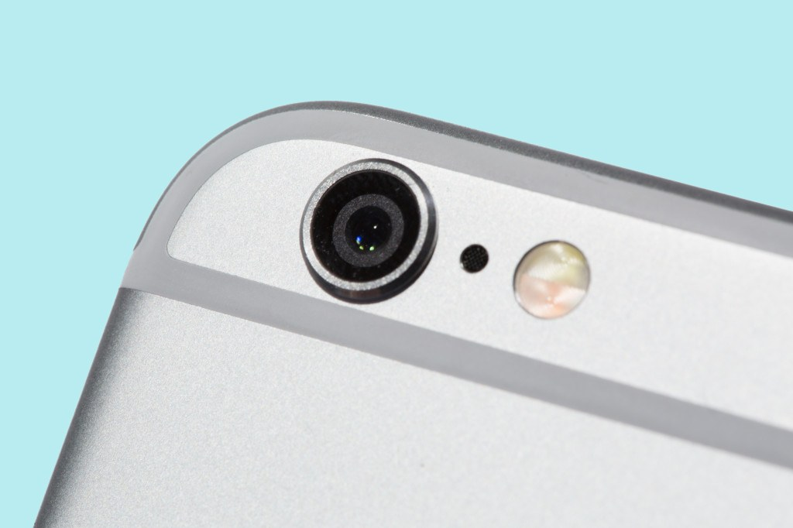
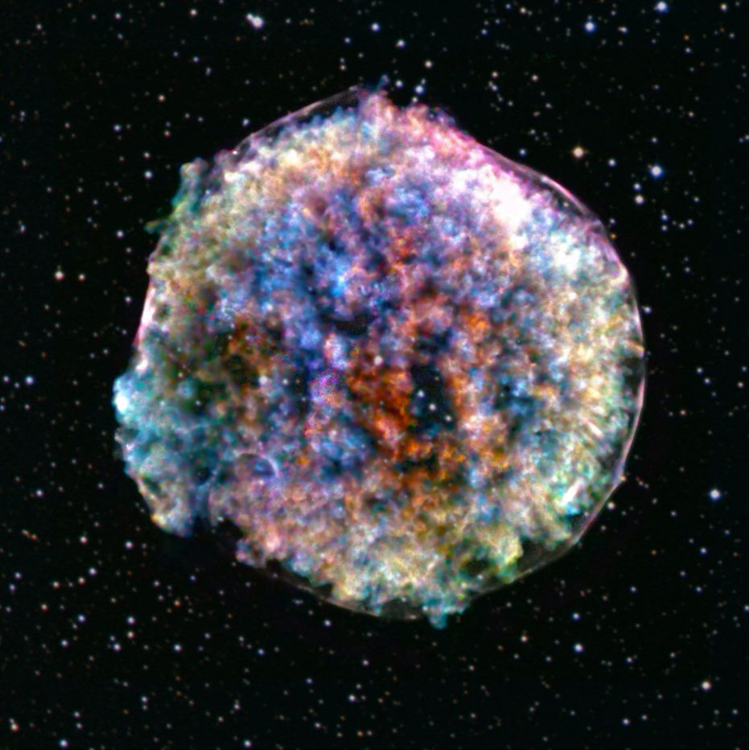

How to keep screen light from disrupting your sleep
Blue light has gotten a bad rap, getting blamed for loss of sleep and eye damage.
Personal electronic devices emit more blue light than any other color.
Blue light has a short wavelength, which means that it's high-energy and can damage the delicate tissues of the eye.
It can also pass through the eye to the retina, the collection of neurons that converts light into the signals that are the foundation of sight.
Laboratory studies have shown that prolonged exposure to high-intensity blue light damages retinal cells in mice.
But epidemiological studies on real people tell a different story.
As an assistant professor at The Ohio State University College of Optometry, I teach and conduct vision research, including work with retinal eye cells.
I also see patients in the college's teaching clinics.
Often, my patients want to know how they can keep their eyes healthy despite looking at a computer screen all day.
They usually ask about "blue-blocking" spectacle lenses that they see advertised on the internet.
But when it comes to protecting your vision and keeping your eyes healthy, blue light isn’t your biggest concern.
One way to think about blue light and potential retinal damage is to consider the sun. Sunlight is mostly blue light.
On a sunny afternoon, it's nearly 100,000 times brighter than your computer screen.
Yet few human studies have found any link between sunlight exposure and the development of age-related macular degeneration,
a retinal disease that leads to loss of central vision.
If being outside on a sunny afternoon likely doesn't damage the human retina, then neither can your dim-by-comparison tablet.
A theoretical study recently reached the same conclusion.
So, why the disconnect between blue light’s effects on rodent eyes and human eyes?
Human eyes are different than rodent eyes. We have protective elements, such as macular pigments and the natural blue-blocking ability of the crystalline lens.
These structures absorb blue light before it reaches the delicate retina.
That doesn't mean you should throw away those sunglasses: They provide benefits beyond protecting your eyes from the sun's blue light.
For example, wearing sunglasses slows down the development of cataracts, which cloud vision.
Read more
The return of the iPhone SE, an iPad with three cameras, and the rest of the current tech rumors

It’s fun to speculate about tech rumors, especially when they apply to the products we use every day.
But, every rumor is different. Some are likely true, while others are little more than desperate clickbait.
On this page, we plan to keep a running tab of the most popular rumors in the tech world and
contextualize them so you don’t get your hopes up—and then feel sad when they don’t pan out.
If you've been waiting for a cheaper option in the iPhone lineup, you may get a new iPhone SE model at the beginning of 2020.
The company hasn't updated that specific part of the line in years, but reports claim a new bargain version of the handset could be on its way.
This rumor has been around for a long time and there are currently several versions of it banging around the internet.
Some rumors claim that the phone will go back to an older design, as far back as the iPhone 5 with its flat sides.
Other versions of the rumor suggest that the SE will look like an iPhone 8, but will have most of the same performance you'd get with a new iPhone 11.
We'll have to wait until at least 2020 to find out who—if anyone—is actually right.
The next iPad will have three camera, iPhone 11 already has three cameras, but the iPad may be the next device on the docket to receive the boxy,
three-lens camera module as part of its hardware package. Rather than matching the exact arrangement of the iPhone,
the iPad would reportedly include a time-of-flight camera, which isn't really useful for photos and videos but makes a lot of sense for AR and VR applications.
Read more
Boeing’s new fighter jet trainer features stadium seating and touchscreens

If you know how to drive a car, chances are you’ve spent some time in a driver’s ed vehicle with a teacher sitting next to you.
The same is true, kind of, for Air Force fighter jet pilots. They learn in trainer aircraft: planes where a rookie and an instructor can fly together.
Last month, Boeing revealed the name of the aircraft that will be the Air Force’s new advanced jet trainer: the T-7A, a supersonic,
47-foot-long plane with pretty red twin tails. The company says the craft will be ready for delivery in 2023. So far, they’ve made just two of them.
Boeing designed the T-7 around the idea that two pilots will be sitting in tandem, one in front of the other.
That's the same as the aircraft it's going to replace, the T-38, but the T-7 offers something new: stadium seating.
That means that if the instructor is sitting in the backseat,
they will have a clear view over the student sitting in front of them—a handy feature when a student is at the controls during landings or learning air-combat maneuvers.
Many driver’s ed cars have a brake mechanism on the teacher’s side; in the same vein, trainer aircraft like the T-7 have two sets of controls,
so either person can fly the plane from their station. The tandem cockpits in the T-7, says the plane’s chief engineer, Paul Niewald, are “basically identical,”
except that the front one boasts a head-up display.
Another perk? While the plane can be flown from either cockpit, the instructor can take over all the controls if they need to.
"If the student is doing something dangerous with the airplane, the instructor pilot can eliminate the student inputs," explains Dan Draeger,
chief tactical test pilot at Boeing. (Each pilot has their own Aces 5 ejection seat, too; it can be set so that pulling one ejection handle triggers both seats.)
The goal of this advanced trainer, just like other trainer aircraft, is to get pilots ready for the current-generation fighter jets that pilots operate out in the field.
"When you fly the T-7, you're flying an airplane that feels very much like a front-line fighter like an F-16 or F-15," Draeger says. (The "T" in the T-7 stands for "trainer,"
and the "F" in those other planes means they're "fighters.")
And while some F-16s, nicknamed "vipers," do indeed have backseats with flight controls, offering a spot for a pilot in training or even a journalist,
Draeger points out that a trainer aircraft should be cheaper to buy and operate than a front-line fighter.
In other words, it's a cost-effective plane that mimics the nimbleness of a jet like the viper.
Read more
This fluffy ball contains the story of the universe

More than 10 thousand years ago, a star in our galaxy exploded. The light from this explosion didn't reach Earth until 1572,
when the astronomer Tycho Brahe saw a burst of brightness in the night sky and mistook it for a new star being born.
We now know that this flare was actually a white dwarf star going supernova—a violently explosive wave of energy and matter that a star emits as it dies.
Nearly 500 years later, the imprint of that explosive burst is still visible—and it's very fluffy.
Last week, NASA released the latest image of Tycho's supernova remnant (also called "Tycho").
The photo, taken by the Chandra X-Ray Observatory, looks a bit like an opalescent dandelion.
"You look at this image, and it sort of looks like it's cotton candy," says Brian Williams,
a NASA astronomer who helped take the latest photograph of the supernova remnant.
Scientists use these cosmic fireworks to understand and test theories of supernovae.
Currently, astronomers don't know all that much about how supernovae form, Williams adds, or how the the explosion progresses.
Further, understanding the mechanism that creates the outburst's distinctive shape— described as "fluffy" and "clumpy"—has been particularly baffling.
Tycho is classified as a Type 1a supernova—it underwent a massive thermonuclear explosion, letting off a shockwave that moved at almost 3,100 miles per second.
The wave hit nearby gas and dust, heating the air and particles by millions of degrees. The human eye can’t pick up on any of this action,
but the activity shines bright in X-ray photographs (X-rays have higher energy than visible light, and tend to come from extremely hot objects,
like black holes, galaxy clusters, and supernovae).
This image of Tycho "is visually striking, and also scientifically meaningful," says Gilles Ferrand, a physicist who uses data to build 3D visualizations of supernovae.
"It's not the first time we got an image from Tycho. But there's something new in this image that's interesting."
That “new” thing is the blue and red in the center of the photo. Most of the colors in the shot—red, yellow, cyan, navy blue, purple, and orange
represent different energy levels as viewed through the x-ray telescope (red and yellow being the lowest, orange and purple being the highest).
In this new photo of Tycho, scientists were also able to isolate and visualize a specific element:
silicon—the clumps of blue in the center represent the silicon moving toward us, and the red is the silicon moving away.
Read more